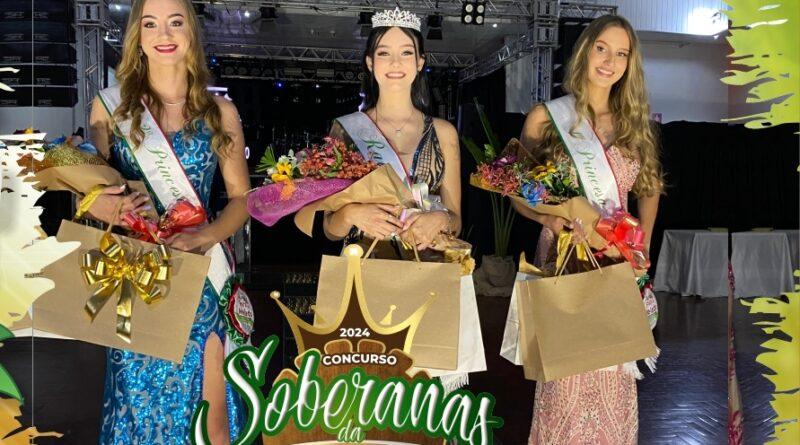
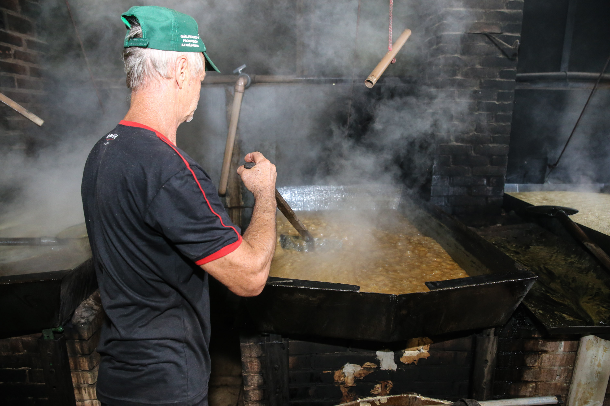

Doçura artesanal que aquece a alma da nossa terra.Palco vibrante onde cultura e tradição se encontram.Entrada majestosa que convida ao doce encanto da feira.Notas que embalam corações e celebram a alegria local.Multidão unida pelo sabor e pela festa da tradição.Sabores genuínos que preservam a cultura e o afeto.Melado feito com paixão, um presente da natureza.Tradições que desfilam, encantando gerações.Barracas que guardam histórias e sabores inesquecíveis.Ritmos que fazem o coração pulsar mais doce.Famílias celebrando momentos de pura doçura e união.Produtos coloniais que traduzem o sabor da tradição.O melado fervendo, símbolo da nossa identidade doce.Autoridades prestigiando a riqueza cultural da feira.Capanema em festa, celebrando suas raízes e sabores.Bandas locais trazendo ritmo e animação para todos.Multidão vibrante que faz da feira uma grande festa.Doces típicos que adoçam cada momento da feira.O cuidado no preparo do melado, nossa riqueza líquida.Crianças sorrindo e brincando no coração da festa.Capanema decorada com as cores e sabores da tradição.Artistas locais que dão vida e melodia ao evento.Visitantes encantados com a autenticidade da feira.Produtos coloniais fresquinhos e cheios de sabor.Melado puro, símbolo doce da nossa cultura.Feira iluminada pelo sol e pelo sorriso do povo.Decoração típica que valoriza nossas raízes.O som da tradição embalando cada canto da feira.Público diverso celebrando a cultura do melado.Sabores do leite que complementam nossa feira.Produtores locais exibindo o melhor da região.Encerramento com chave de ouro na Feira do Melado.
imagem-1.jpg)
imagem-2.jpg)
imagem-3.jpg)
imagem-4.jpg)
imagem-5.jpg)
imagem-6.jpg)